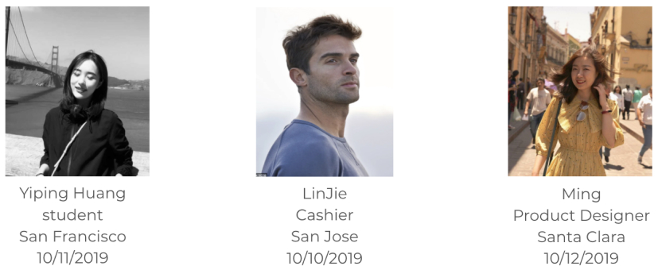
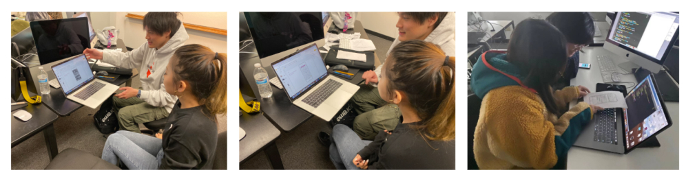

Routesy is a mobile app that provides real-time transit predictions for the most popular transit systems in San Francisco. It gives users the exact arrival time of Muni, BART and Caltrain, and helps people find their way around much easier.
UI/UX Designer
Figma, XD
Photoshop
Research, Wireframing, Interaction Design, Visual Design, Prototyping, and Testing
The current app is very difficult to use, with single function and no search function, so users cannot get the information they need in the fastest way.
Improve the user experience of this app and add more conveienent functionalities such as searching and filtering.
In order to validate the quality of the idea, I conducted some quick user surveys as well as 3 one on one interviews with the primary audience that I was targeting.
I drew the wireframes of the three tasks and conducted three groups of testing with the three tasks. I got a lot of useful feedbacks and started to design my high-quality work based on these feedbacks.

Routesy redesign is my first UX Design project. In this project, I learned a completely new set of UX design skills and realized that I still had a lot of room to improve my design skills.
Finding the problem is key
Through this case study, I realized that only when you figured out the problem can you ensure that your solution is meaningful.
Keep on creating clean UI
User-Interface (UI) is where users interact with a product, having a clean UI has many benefits and can ultimately have a huge impact on customer satisfaction. If a web page has a clean layout and it will be easy to interact with and lead to a good user experience on that page.